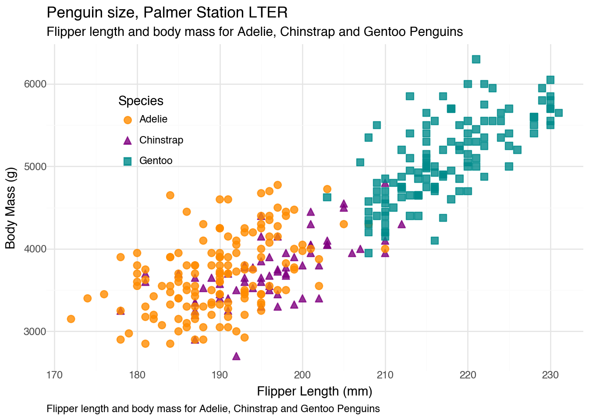

# import required libraries
import os
import PyDyTuesday
import pandas as pd
from great_tables import GT
# set working directory (only for line by line coding)
# comment out when rendering!
# os.getcwd()
# os.chdir(os.getcwd() + '/2025-04-15')Pydy Tuesday 2025-04-15
Data Source

Data Source: This week we’re taking another look at penguins! The Palmer Penguins dataset first appeared in TidyTuesday back in July of 2020. The Palmer Penguins data, contained in the {palmerpenguins} R package as the penguins and penguins_raw data frames, have become popular for data exploration and visualisation, particularly in an educational context.
Background
The data was originally published in Gorman et al. (2014). Their inclusion in the datasets package included in the base R distribution was motivated by Horst et al. (2022).
Additional links: Also check out the {basepenguins} R package to convert scripts that use {palmerpenguins} to use the base R versions of the datasets.
Set up
Download data
We can download the data using the PyDyTuesday library and specifying the date. This will load several files:
penguins.csv: data file.penguins_raw.png: image file.meta.yaml: meta data file with information about the data files and the curator.readme.md: README file with information about this week’s data.
The data dictionary is located here
# Download files from the week, which you can then read in locally
PyDyTuesday.get_date('2025-04-15')
df = pd.read_csv("penguins.csv") # , encoding='latin-1'
df_raw = pd.read_csv("penguins_raw.csv")README-flipper-bill-1.png downloaded
meta.yaml downloaded
penguins.csv downloaded
penguins_raw.csv downloaded
readme.md downloadedLet’s take a peak at penguins.csv:
(
GT(df.head())
.tab_header(title="Penguins")
.fmt_number(columns=["bill_len", "bill_dep", "flipper_len"])
)| Penguins | |||||||
|---|---|---|---|---|---|---|---|
| species | island | bill_len | bill_dep | flipper_len | body_mass | sex | year |
| Adelie | Torgersen | 39.10 | 18.70 | 181.00 | 3750.0 | male | 2007 |
| Adelie | Torgersen | 39.50 | 17.40 | 186.00 | 3800.0 | female | 2007 |
| Adelie | Torgersen | 40.30 | 18.00 | 195.00 | 3250.0 | female | 2007 |
| Adelie | Torgersen | 2007 | |||||
| Adelie | Torgersen | 36.70 | 19.30 | 193.00 | 3450.0 | female | 2007 |
Let’s take a peak at penguins_raw.csv
(
GT(df_raw.head())
.tab_header(title="Penguins Raw")
.fmt_date(columns = ["Date_Egg"])
#.fmt_number(columns=["Cul", "bill_dep", "flipper_len"])
)| Penguins Raw | ||||||||||||||||
|---|---|---|---|---|---|---|---|---|---|---|---|---|---|---|---|---|
| studyName | Sample Number | Species | Region | Island | Stage | Individual ID | Clutch Completion | Date Egg | Culmen Length (mm) | Culmen Depth (mm) | Flipper Length (mm) | Body Mass (g) | Sex | Delta 15 N (o/oo) | Delta 13 C (o/oo) | Comments |
| PAL0708 | 1 | Adelie Penguin (Pygoscelis adeliae) | Anvers | Torgersen | Adult, 1 Egg Stage | N1A1 | Yes | 2007-11-11 | 39.1 | 18.7 | 181.0 | 3750.0 | MALE | Not enough blood for isotopes. | ||
| PAL0708 | 2 | Adelie Penguin (Pygoscelis adeliae) | Anvers | Torgersen | Adult, 1 Egg Stage | N1A2 | Yes | 2007-11-11 | 39.5 | 17.4 | 186.0 | 3800.0 | FEMALE | 8.94956 | -24.69454 | |
| PAL0708 | 3 | Adelie Penguin (Pygoscelis adeliae) | Anvers | Torgersen | Adult, 1 Egg Stage | N2A1 | Yes | 2007-11-16 | 40.3 | 18.0 | 195.0 | 3250.0 | FEMALE | 8.36821 | -25.33302 | |
| PAL0708 | 4 | Adelie Penguin (Pygoscelis adeliae) | Anvers | Torgersen | Adult, 1 Egg Stage | N2A2 | Yes | 2007-11-16 | Adult not sampled. | |||||||
| PAL0708 | 5 | Adelie Penguin (Pygoscelis adeliae) | Anvers | Torgersen | Adult, 1 Egg Stage | N3A1 | Yes | 2007-11-16 | 36.7 | 19.3 | 193.0 | 3450.0 | FEMALE | 8.76651 | -25.32426 | |
Recreate plot
This week instead of coming up with my own plot, I’ll try to recreate the plot below showing the relationship between flipper length and body mass for the three different species of penguins: Adelie, Chinstrap, and Gentoo.

I’ll use plotnine to recreate the plot. The code is shown below.
from plotnine import *
# Drop missing values
df_clean = df.dropna(subset=["flipper_len", "body_mass", "species"])
# Define manual color and shape mappings
color_scale = scale_color_manual(
values={
"Adelie": "darkorange",
"Chinstrap": "purple",
"Gentoo": "#008b8b"
}
)
shape_scale = scale_shape_manual(
values={
"Adelie": "o", # circle
"Chinstrap": "^", # triangle
"Gentoo": "s" # square
}
)
# Create the plot
(
ggplot(df_clean, aes(x="flipper_len", y="body_mass", color="species", shape="species"))
+ geom_point(size=3, stroke=0.5, alpha = 0.8)
+ color_scale
+ shape_scale
+ labs(
title="Penguin size, Palmer Station LTER",
subtitle='Flipper length and body mass for Adelie, Chinstrap and Gentoo Penguins',
caption='Flipper length and body mass for Adelie, Chinstrap and Gentoo Penguins',
x="Flipper Length (mm)",
y="Body Mass (g)",
color="Species",
shape="Species"
)
+ theme_minimal()
+ theme(
legend_position=(0.15, 0.8),
plot_caption=element_text(ha='left')
)
)